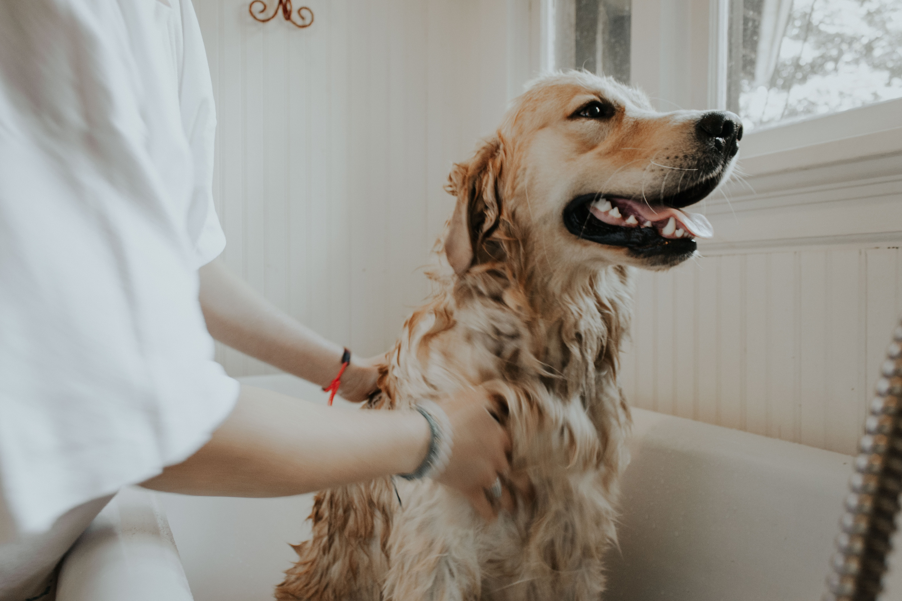
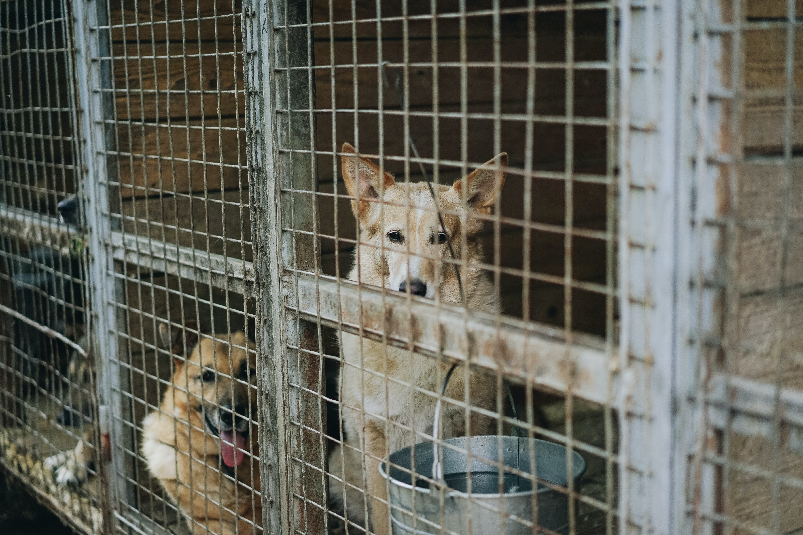

Home
About us
Rocky Road Rescue is a not for profit all-breed, foster-based, volunteer-run dog rescue in the Ottawa area. The organization is run entirely by volunteers (who donate their time outside their work schedule and personal lives) and is 100% foster-based — all our dogs wait for their forever families in loving foster homes, where they learn to be good canine citizens.
Since Rocky Road Rescue is not for profit, we raise funds through events and fundraisers, which allow us to continue to rescue dogs in need. One hundred percent of these funds go towards the purchase of food, vetting costs, shelter pull fees, and other costs associated with caring for the dogs and the general operation of the rescue. We thank you for considering adoption and supporting rescue.
What we do
Our goals are to rescue dogs from high-kill shelters, dogs without homes, and compassionate owner surrenders, to provide them with the medical care they deserve, as well as find them the best loving forever homes. We are also committed to educating the public on responsible pet ownership, and to give back to the community through assisting families in need whenever possible.